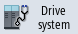
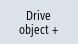
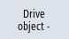

Status display
The "Drive System Diagnostics" window displays the status information about the drive units and the associated drive objects. The status symbols have the following meaning:
Display icon | | Meaning |
|---|
 | Green | The drive object is in (cyclic) operation, without any detected problems. |
 | Yellow | The drive object has detected a less serious problem, i.e. a warning is pending, for example, or enables are missing. |
 | Red | This drive object has detected a serious problem, for example, an alarm is pending. |
 | Gray | The drive status could not be determined for this drive object. |
# | Special characters | Error when reading the data. |
Procedure
 | 1. | Select the "Diagnostics" operating area. |
 | 2. | Press the menu forward key and the "Drive system" softkey. |
|  | 3. | The "Drive System Diagnostics" window opens. The name of the selected drive object is displayed in the window title. |
|   | | Press the "Drive object +" or "Drive object -" softkey. The next (+) or previous (-) drive object is selected. |
| | | - OR - |
| | | Press the "Select drive unit" softkey. The "Select Drive Unit" window opens. |
| | 4. | Select the desired drive unit via the drop-down list box and press "OK" to confirm the selection. |